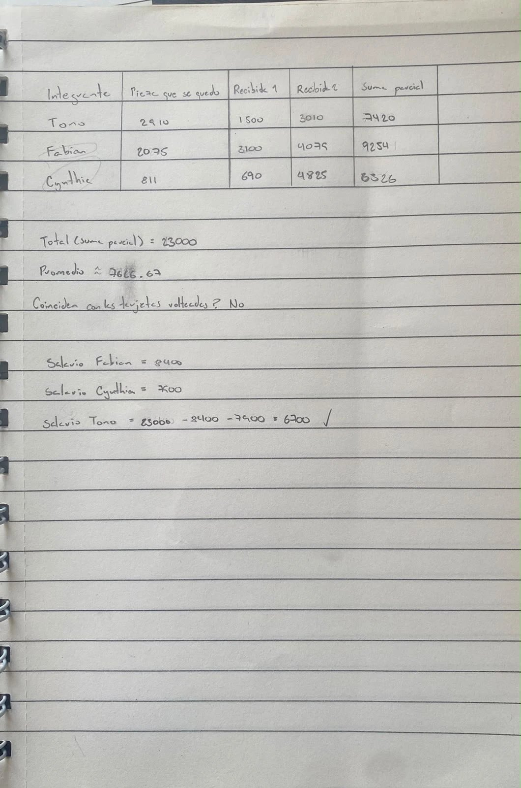
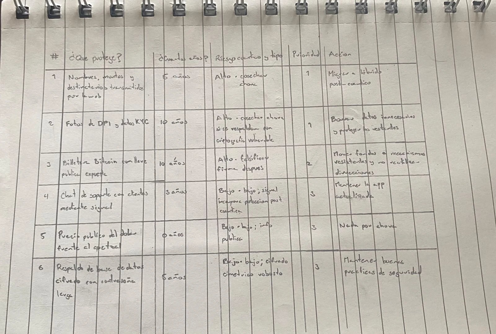

Resumen del laboratorio
El laboratorio tiene dos partes. En la Parte A se calcula con lápiz un promedio sin que nadie vea el salario de nadie (cómputo multipartito, MPC, con reparto aditivo) y se ve cómo se rompe cuando dos de tres se ponen de acuerdo. En la Parte B se arma un inventario post-cuántico de una venture ficticia de remesas: qué secretos hay que proteger hoy porque un atacante puede cosechar ahora y descifrar después.
Estado: las tablas A.2 y A.4 están hechas a mano, con fotos abajo. Los salarios son ficticios (de las tarjetas del lab).
Estado de actividades
Parte A: el promedio secreto (A.2)

Lo que dice la hoja, en limpio:
| Integrante | Pieza que se quedó | Recibida 1 | Recibida 2 | Suma parcial |
|---|---|---|---|---|
| Tono | 2,910 | 1,500 | 3,010 | 7,420 |
| Fabian | 2,075 | 3,100 | 4,079 | 9,254 |
| Cynthia | 811 | 690 | 4,825 | 6,326 |
Total (suma de las sumas parciales) = 7,420 + 9,254 + 6,326 = 23,000 · Promedio = 23,000 ÷ 3 ≈ 7,666.67. Antes de voltear las tarjetas nadie supo el salario de nadie: cada pieza recibida, sola, es un número al azar.
Colusión: dos de tres lo rompen
Fabian (8,400) y Cynthia (7,900) se juntan sin Tono, juntan sus salarios y el total y restan: 23,000 − 8,400 − 7,900 = 6,700, el salario de Tono. La seguridad dependía de que no se coludieran suficientes partes ("mayoría honesta"): la confianza se movió de un custodio de datos a "que no se pongan de acuerdo dos de tres".
Parte B: inventario post-cuántico de Remesas Volcán Prueba (A.4)

Venture ficticia de remesas de EE. UU. a Guatemala. Los años son supuestos del ejercicio; no se inventan plazos legales (los del KYC, por confirmar con asesoría legal) ni fechas de la computadora cuántica (desconocido).
| # | ¿Qué protege? | ¿Cuántos años? | Riesgo y tipo | Prior. | Acción |
|---|---|---|---|---|---|
| 1 | Nombres, montos y destinatarios transmitidos por la web | 5 | Alto cosechar ahora | 1 | Migrar a híbrido post-cuántico |
| 2 | Fotos de DPI y datos KYC | 10 | Alto cosechar ahora, si se respaldan con criptografía vulnerable | 1 | Borrar datos innecesarios y proteger los restantes |
| 3 | Billetera Bitcoin con llave pública expuesta | 10 | Alto falsificar firma después | 2 | Mover fondos a mecanismos resistentes y no reutilizar direcciones |
| 4 | Chat de soporte con clientes mediante Signal | 3 | Bajo Signal incorpora protección post-cuántica | 3 | Mantener la app actualizada |
| 5 | Precio público del dólar | 0 | Bajo información pública | 3 | Nada por ahora |
| 6 | Respaldo de base de datos cifrado con contraseña larga | 5 | Bajo cifrado simétrico robusto | 3 | Mantener buenas prácticas de seguridad |
Justificación de prioridades
- Prioridad 1: la conexión web y los datos KYC pueden ser almacenados por un atacante para intentar descifrarlos después.
- Prioridad 2: elementos que requieren una migración planificada, pero no tienen la urgencia de los anteriores.
- Prioridad 3: Signal ya incorpora mecanismos post-cuánticos, el precio del dólar es público y el cifrado simétrico robusto es menos vulnerable a los ataques cuánticos.
Reflexión (3 líneas)
(a) En el promedio secreto, ¿en quién tuve que confiar y cuándo se rompió?
En que los otros dos no se pusieran de acuerdo y en que anunciaran su suma parcial verdadera. Se rompió cuando dos se juntaron: con sus salarios y el total restaron y sacaron el del tercero.
(b) ¿Qué elemento del inventario urge más y por qué "más adelante" no sirve?
La conexión cifrada (#1): lo que un atacante graba hoy se abre cuando exista una computadora cuántica, así que migrar después no protege lo que ya se grabó.
(c) En mi venture, ¿qué calcularía repartido o cifrado, y qué migraría primero?
Un promedio de ingresos de mis clientes repartido entre varias partes (MPC), en lugar de juntar los datos, y migraría primero a híbrido el acuerdo de llaves de la conexión con los clientes, porque es lo que se puede "cosechar ahora, descifrar después".
Reglas del lab
- Todo en papel; la calculadora del teléfono, en modo avión, solo para sumar.
- Solo salarios ficticios de las tarjetas: nunca salarios o datos financieros reales.
- Cero datos personales reales; no se inventan fechas de la computadora cuántica ("desconocido") ni leyes.
Guía y plantilla: README.md · PLANTILLA.md · RESPUESTAS.md.
Lo que aprendimos
Aprendimos que se puede calcular un promedio sin que nadie vea el dato de nadie, repartiendo el secreto en piezas al azar que solas no dicen nada, pero que la seguridad depende de que no se pongan de acuerdo suficientes partes: dos de tres bastaron para sacar el tercer salario. También vimos que, contra la computadora cuántica, lo que más urge proteger es lo que se puede grabar hoy y debe seguir secreto muchos años, como la conexión con los clientes, y que el mejor cifrado es el dato borrado.